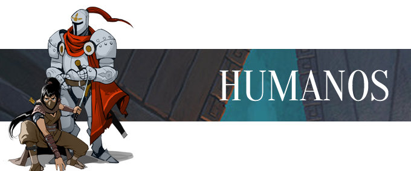
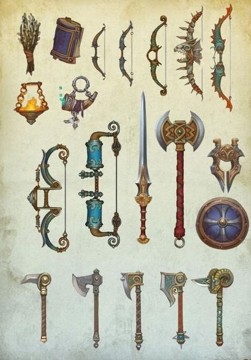

Humanos, una criatura inusual, mamíferos ágiles, e inteligentes(algunos), estos seres no están definidos por una ventaja específica, al contrario, pueden cambiar y crecer a su disposición, con entrenamiento, aunque a decir verdad, pueden resultar realmente débiles cuando trabajan por solitario, eso es debido a que sus estadísticas no incrementan rapidamente.
Esta clase de humanos, particularmente, viven amurallados en un lado de la isla central, y aunque no se lleven bien con algunas razas nómadas de monstruos, son perfectamente de entablar alianza con algunas suficiente mente amigables. Ellos son omnívoros, cazan, crian cualquier animal, pueden cocinar diferentes platillos, y tienen un gran habilidad para construir.
Los humanos son capaces de adquirir cualquier tipo de estadística en ellos mismos, pero su media de edad es de 80 años, muy corto para muchas de las razas que hay, están divididos en 2 bandos, los humanos medievales, y los futuristas, y a pesar de todas sus diferencias morales, hay una cualidad que comparten, no pueden hacer casi nada sin algún objeto con el que dañar, o controlar la magia, claro que hay excepciones.
El motivo principal de la separación entre esta raza, no fue nada menos que un conflicto de pensamientos, un bando, pensaba que los monstruos y los humanos eran enemigos por naturaleza, que la mágia era mejor que la ciencia, ¿Por que inventar cuando puedes hacer mágia? Además, si unas máquinas nos solucionaban todo, perderíamos nuestros valores.
Martín José Morata García